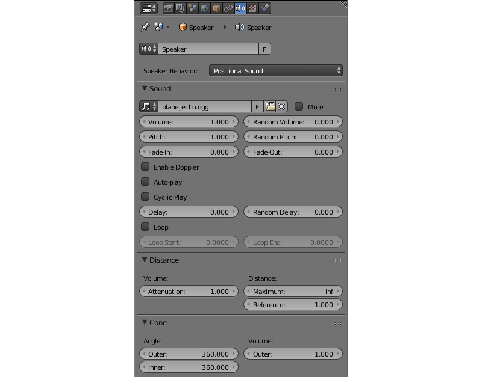

Audio System¶
Audio sources are created in Blender. The standard Speaker object is used.

Audio Source Settings¶
Speaker parameters can be set up on the Properties panel under the Object Data tab.
The engine supports all the standard Blender sound parameters and some engine-specific settings.
Speaker behavior:
The behavior of the audio source.
Positional— high-quality sound with spatial positioning and directivity (conicity). The Web Audio API is used for sound rendering. Playback performance of such sounds is the least and so use them only for short samples.
Background Sound— high-quality omnidirectional sound without spatial positioning. The Web Audio API is used for sound rendering. It is more performant but is not effective for music.
Background Music— used for music playback. It has maximum performance due to the use of the Audio HTML tag, but has minimum flexibility.
The following options are available on the Sound panel:
Volume
Speaker volume
Random Volume
Additional volume randomization. The resulting value is calculated as for the delay.
Pitch
Sound playback velocity.
Random Pitch
Additional randomization of the sound playback speed. The resulting value is calculated as for the delay.
Fade-In
Fade-in time interval.
Fade-Out
Fade-out time interval.
Disable doppler
Ignore source’s frequency shift upon its moving.
Cyclic play
Loop the sound playback.
Delay
Delay before sound playback starts.
Random Delay
Additional delay randomization. The resulting value is calculated according to the formula \(Delay_{result} = Delay + Delay_{random} * Random_{[0-1]}\).
Loop
Loop the sound playback. Contrary to the
Cyclic playoption it guarantees a zero delay upon repeat. The option is available only for sound sources withPositionalorBackground Soundbehavior.
{kind=link}
Processing and Decoding¶
Supported formats (containers):¶
ogg, Vorbis codec (Chrome, Firefox)
- mp3 (Chrome, Safari)
mp4, AAC codec (Chrome, Safari)
It is recommended to use Ogg as it is an open standard, is widespread in browsers and provides good sound quality. The optimal format in respect to the quality and compatibility is 48kHz/16bit. Single-channel sound (mono) is used to store shot samples while two-channel sound (stereo) is used for music playback.
Converting resources between different formats is described in the corresponding section.